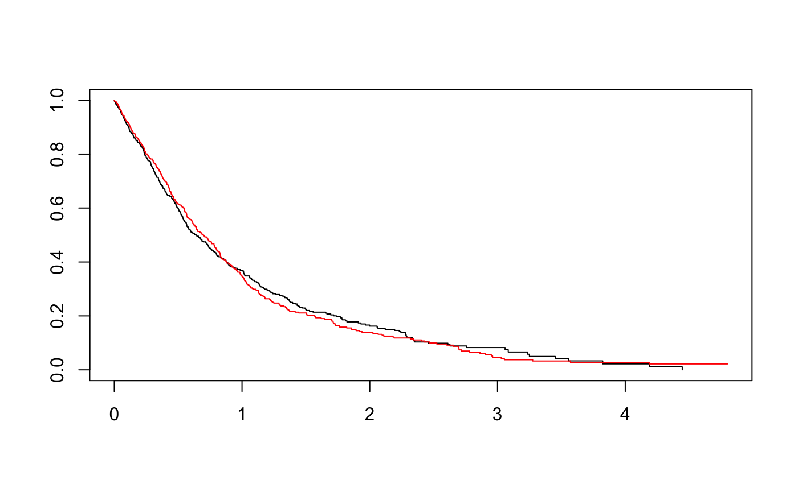

mar.Rmd
# library(smim)
library(survRM2)
#> Loading required package: survival
devtools::load_all()
#> Loading smim
n <- 1000
t.time <- rexp(n) # event time
c.time <- runif(n, min = 0.1, max = 5) # censoring time
time <- pmin(t.time, c.time)
status <- as.numeric(t.time < c.time)
pattern <- ifelse(status == 1, 1, ifelse(time < 0.5, 2, 3))
group <- rep(c(0,1), each = 500)
table(status, pattern, time < 0.5)
#> , , = FALSE
#>
#> pattern
#> status 1 2 3
#> 0 0 0 113
#> 1 450 0 0
#>
#> , , = TRUE
#>
#> pattern
#> status 1 2 3
#> 0 0 59 0
#> 1 378 0 0
tau <- 3
rmst2(time, status, group, tau = tau)
#>
#> The truncation time: tau = 3 was specified.
#>
#> Restricted Mean Survival Time (RMST) by arm
#> Est. se lower .95 upper .95
#> RMST (arm=1) 0.942 0.040 0.864 1.021
#> RMST (arm=0) 0.964 0.041 0.883 1.045
#>
#>
#> Restricted Mean Time Lost (RMTL) by arm
#> Est. se lower .95 upper .95
#> RMTL (arm=1) 2.058 0.040 1.979 2.136
#> RMTL (arm=0) 2.036 0.041 1.955 2.117
#>
#>
#> Between-group contrast
#> Est. lower .95 upper .95 p
#> RMST (arm=1)-(arm=0) -0.022 -0.134 0.091 0.707
#> RMST (arm=1)/(arm=0) 0.978 0.869 1.100 0.707
#> RMTL (arm=1)/(arm=0) 1.011 0.957 1.068 0.707
delta <- c(1,1,1)[pattern] # the third number control delta adjustment for MNAR
tmp <- rmst_delta(time, status, x = rep(1, length(time)), group, pattern, delta, tau, n_mi = 5, n_b = 100, seed = 123)
tmp$rmst
#> group rmst sd wb_sd
#> [1,] 0 0.9524942 0.03968096 0.03423892
#> [2,] 1 0.9356049 0.03930751 0.03752790
diff_rmst <- function(rmst, sd){
diff <- diff(rmst)
diff_sd <- sqrt( sum(sd^2) )
p_val <- 2* (1 - pnorm( abs(diff/diff_sd) ))
c(diff = diff, sd = diff_sd, p = p_val)
}
rbind( diff_rmst(tmp$rmst[,"rmst"], tmp$rmst[, "sd"]),
diff_rmst(tmp$rmst[,"rmst"], tmp$rmst[, "wb_sd"]))
#> diff sd p
#> [1,] -0.01688926 0.05585390 0.7623602
#> [2,] -0.01688926 0.05080007 0.7395379